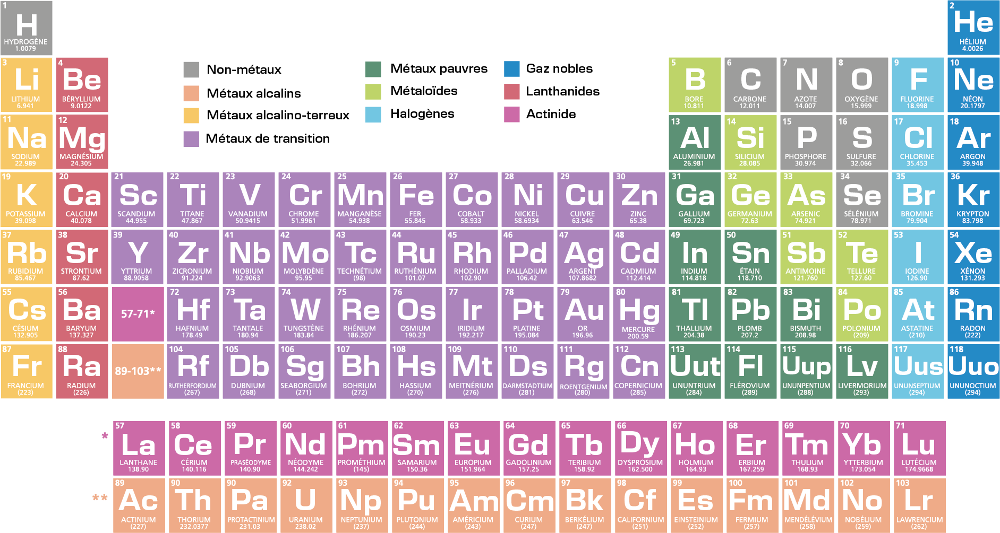

Le tableau périodique des éléments
Le tableau périodique des éléments classe tous les éléments chimiques selon leur numéro atomique et leurs propriétés. Créé par Mendeleïev, il est organisé en périodes (lignes) et groupes (colonnes), regroupant les éléments aux comportements similaires. Il permet de comprendre la composition de la matière , de prédire les réactions chimiques et même d'expliquer la formation des étoiles !
